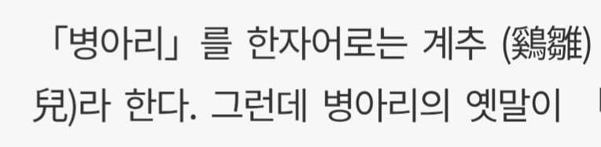
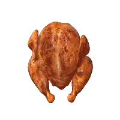

병아리는 한자로 이렇게 부름
댓글
이자식 방금 개추라고
방금 계추라고
이자식 방금 번란추라고


왜 말을 하다말.. 근데 이자식 방금 개추라고
뭐 개추라고?
병아리!
겟~츄!
계추 크레용~
계추 크레용~
몸통 날개 다리 목 스웩~
계추치킨 교촌

유계 같은거 생각했는데 계추
한 번만이다
개자식 방금 이추라고
삐약삐 삐약 삐약삐약
병아리의 순우리말 옛말은 '비육'입니다. 15세기 《훈민정음 해례본》 등에 '비육' 또는 '볋앓' 같은 형태로 기록되어 있으며, 이 단어에 어린 새끼를 뜻하는 접미사(-아리)가 붙고 세월이 흐르면서 오늘날의 '병아리'로 변했습니다.
접미사 -아리,-아기,-아지는 어원이 같은지 궁금하네
그리고 더 확장해서 일본어 접미사 -라기도 같은 어원을 공유하는지도

옛말은 '붐업'이라 카더라